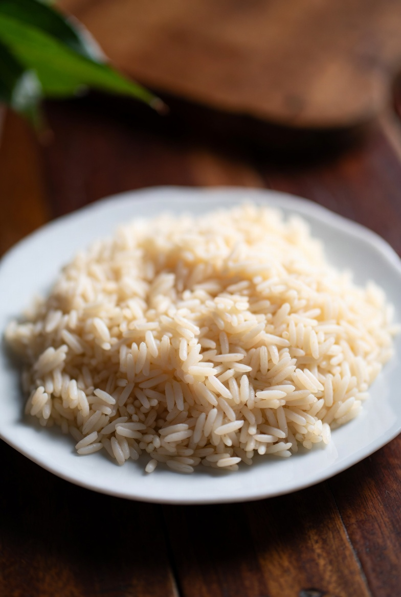

White Rice

Description
A simple and classical recipe of white rice easy to learn. The rice is a side dish that could be used with a variety of dishes.
Ingredients
- 2 cups long-grain white rice
- 2 tablespoons minced onion
- 2 cloves garlic, minced
- 2 tablespoons vegetable oil
- 1 teaspoon salt
- 2 cups hot water
Steps
- Place the rice in colander and rinse thoroughly with cold water, set aside
- Heat the oil in a saucepan over medium heat. Cook the onion in the oil for one minute
- Stir in the garlic and cook until the garlic is golden brown.
- Add the rice and salt and cook and stir until begins to brown.
- Pour hot water over rice mixture and stir. Reduce heat to low, cover the saucepan, and allow to simmer until the water has been absorbed, 20 to 25 minutes
Home